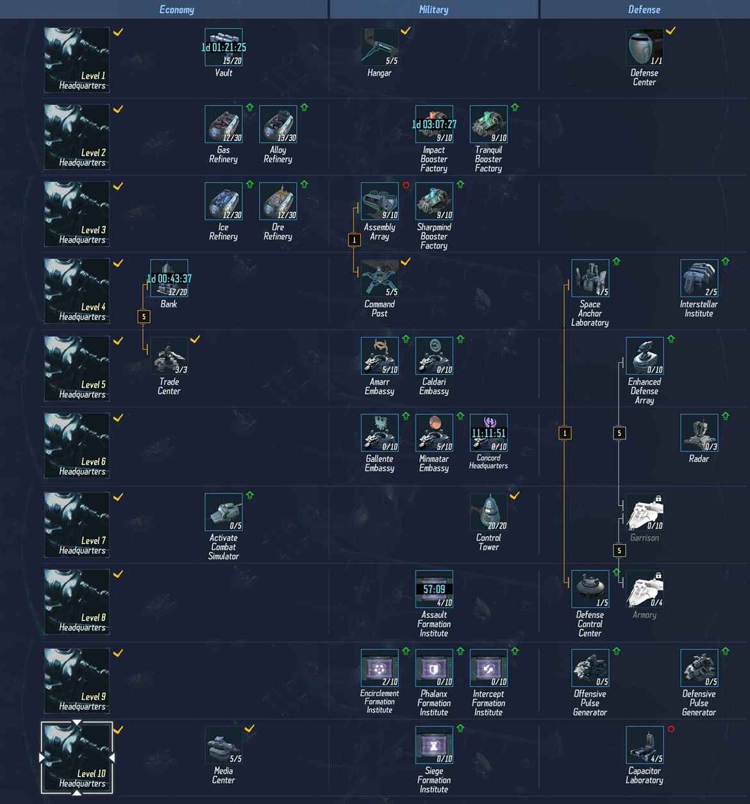

Relocation

The first thing to do when relocating is to capture 7 grids in a circle, the same shape as your base in a spot on a
map that looks peacefull and quiet.
Then click the center tile -> assemble and chose the relocate icon. Relocation either uses a station anchoring
device, you gen one for free as a starter mission
or 900 nova credits from the interbus market. Or 1000 nova credits if you relocate directly without a station
anchoring device.
Note: All ships must be back at base to relocate. Currently not certain if you can relocate while captured or with
shields on. I believe so but I can't confirm.
Research
List of research priorities. Note You should generally use the isk options for research slots RSS permitting, especially the 1.5k and 3k options.
The lower priority items become important later in the game.
| Highest - Research to max asap given time/rss |
Assembly Array, Booster Factories (3), Command Post, Control Tower, Capaciter Factory, Media Center |
| High Priority - Research to mid level as soon as you can, then when have room add in spare spots |
Vault, Refineries (4), Bank, Trade Center, Space Anchor, Interstellar Institute |
| Med priority - Things you need but can wait |
Embassies, Formations |
| Low priority |
Pretty much everything in defence and Active COmbat Scanner |
